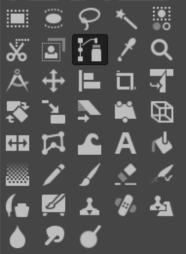
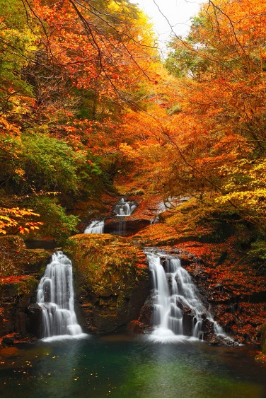
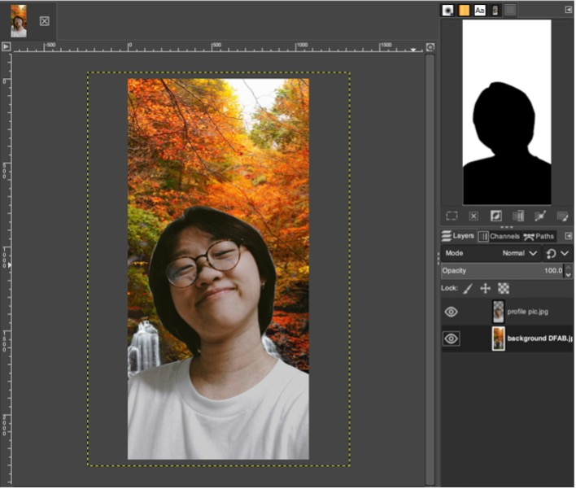

Computer Aided Design
We were introduced to another image manipulation editor GIMP as an alternative to Photoshop. As an exercise to warm up to the new software, we edited a profile picture of ours and place a different background behind.
Here is the link of where you can install GIMP on your desktop.
Process

- Using the Paths tool, outline your image or the parts that you would like to keep and press “enter” to make it uneditable
2. Using the eraser tool, erase the background, your background should become like a mosaic
Then, insert a background image that you want, I chose this!
Make sure the layer you place the picture on is below your portrait.
This step is optional, but if you head to “filters” and go to “blur” then “gaussian blur”, it helps to create contrast and blur out the background a little bit.